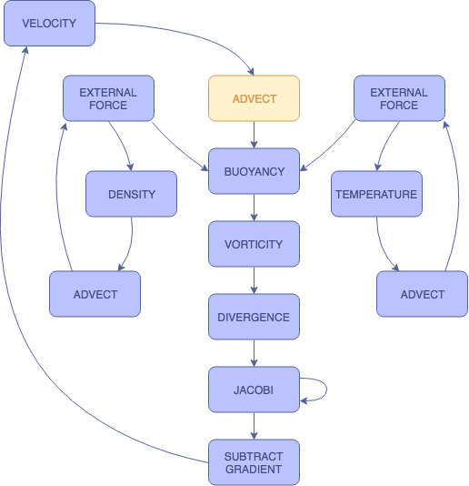
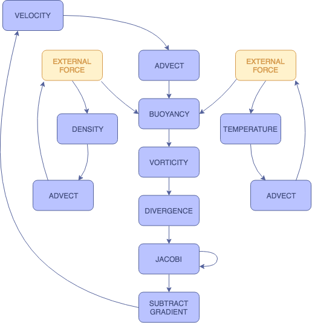
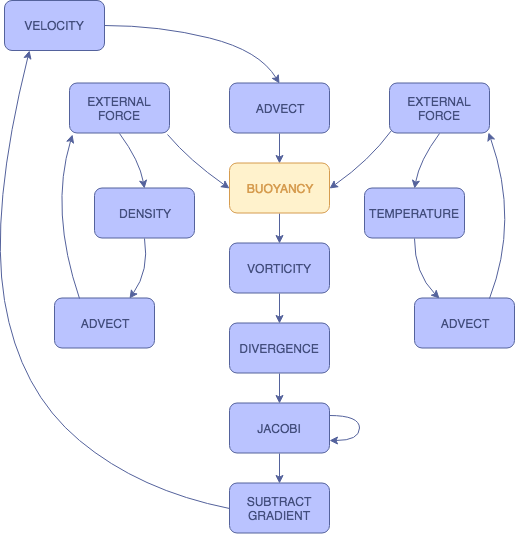
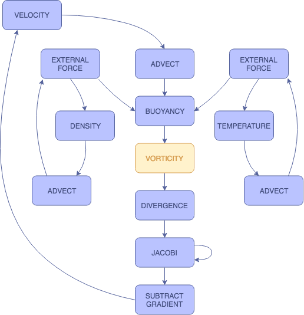
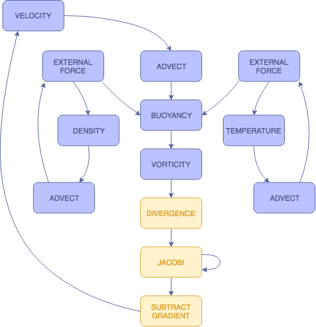
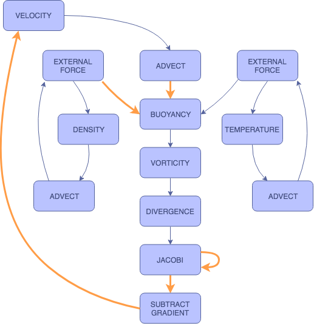

SMOKE SIMULATOR
Rachel Bhadra, Jonathan Ngan, Kenneth Tsai
ABSTRACT
In this project, we implemented a 2D smoke simulation using Three.js and WebGL. We extended upon a 2D fluid simulation based on the Navier Stokes equations by adding a buoyant force. The basis of the simulation is a Eulerian grid which we use to keep track of relevant forces, and a series of fragment shaders to manipulate these forces and visualize the resulting smoke. The simulation itself is interactive, and the settings can be manipulated by the user to achieve different results, as well as see the various components of the overall process. You can run our simulation here.
APPROACH
Navier-Stokes
Our fluid simulation is based on the Navier-Stokes equations of fluid dynamics, assuming an incompressible, homogeneous fluid. $$\frac{\partial\boldsymbol{u}}{\partial t} = -(\boldsymbol{u} \cdot \nabla)\boldsymbol{u} - \frac{1}{\rho}\nabla p+\nu \nabla^2\boldsymbol{u}+\boldsymbol{F}$$ $$\nabla \cdot \boldsymbol{u} = 0$$
In these equations, u is the velocity field, ρ is density, p is pressure, v is viscosity, and F represents any additional forces. Viscosity is virtually zero where smoke is concerned, so we have left that respective shader out of our implementation. Instead, we include a buoyant force to simulate the rising nature of smoke, which is included within the F parameter.
We extract our shaders from this equation by solving for each individual term. Advection represents the first term. Divergence, the Jacobi iterations, and gradient subtraction represent the second term. Finally, the remaining shaders can be grouped into the F term. (Note that user inputted external forces operate slightly differently from other external forces).
Framework
As mentioned above, we built our framework in Javascript using Three.js. There are specific Javascript files for each operation, and each operation corresponds to a WebGL fragment shader. These operations are computed by rendering onto a WebGLRenderTarget. Each of the fluid properties are represented as "slabs". Each slab is associated with two textures, one for reading to and one for writing to a WebGLRenderTarget. Since a texture cannot be read from and written to simultaneously, we keep track of these two textures and swap them after a slab has been written to.
There are three fields in which we store information about our smoke: velocity, density, and temperature. Density and temperature are one-dimensional, and we update these fields based on advection and external forces, which we will get to later. Velocity, on the other hand, is two dimensional, and requires all operations to update. While the velocity field is the most important, as it is storing the most information from our calculations, the density field is what represents the actual simulated smoke.
We handle user input by polling the mouse. On a click, the program adds density and temperature to the mouse’s location. It will continue to track the mouse position and use the mouse’s movements to add velocity.
Shaders
ADVECTION
Advection handles the directional dissipation of the three information fields. This direction is determined by the position in the advection field and its corresponding value in the velocity field. Here, we apply a stable, implicit method (Stam 1999) by taking the trajectory of each particle to find their original fluid properties at the previous time step, and using these values to perform the advection computation.
$$q(\mathbf{x}, t + \delta t) = q(\mathbf{x} - \mathbf{u}(\mathbf{x}, t) \delta t, t)$$
Note that q can represents fluid properties density, velocity, and temperature. In our project, we used a timestep value of 1.0.

EXTERNAL FORCES
The external forces in this simulation refer to the user input. These shaders handle this input by adding value to each of the three respective slabs. For density and velocity, a static value is added to the fields when the mouse is clicked. With temperature, the amount added per click can be adjusted by the user.
We have separate shaders for each of the slabs in order to produce more customized visualizations.

BUOYANCY
The buoyancy shader applies a force along the vertical axis. This is where the temperature slab comes into play.
$$f_{buoy} = (-\kappa d + \sigma (T - T_0))\mathbf{\hat{j}}$$
As the temperature of the smoke increases, the buoyant force increases since heat rises. As the density of the smoke increases, the smoke becomes heavier and the buoyant force decreases, causing it to sink. By adjusting the smoke temperature value added by the user, we can see the changes in the smoke's behavior. When we increase the smoke temperature, the smoke rises more rapidly. When we decrease the smoke temperature, the smoke rises only slightly before sinking.

VORTICITY
The vorticity shader accentuates and preserves the curling behavior of the smoke. Due to the low viscosity of smoke, we generally observe some rotational forces in natural smoke behavior. This shader allows us to restore some of these forces that may have been dampened by the discretized nature of the simulation. We first compute a normalized vorticity field (psi) that points from areas with lower vorticity to those with higher vorticity.
$$\Psi = \frac{\eta }{|\eta|}, \eta = \nabla |\omega|, \omega = \nabla \times \mathbf{u}$$
Afterwards, we apply the restorative force
$$f_{vc} = \varepsilon (\Psi \times \omega) \delta x$$

PRESSURE
There are three steps, and therefore three shaders, involved in the pressure calculation: divergence, Jacobi iteration, and gradient subtraction. Divergence computes a temporary surface while Jacobi iteration computes the actual pressure values. In gradient subtraction, the pressure gradient calculated from Jacobi iteration is subtracted from velocity, thereby updating the velocity field. To solve the Poisson pressure equation, we use Jacobi iteration with an initial guess of 0:
$$x_{i,j}^{(k+1)}=\frac{x_{i-1,j}^{(k)}+x_{i+1,j}^{(k)}+x_{i,j-1}^{(k)}+x_{i,j+1}^{(k)}+\alpha b_{i,j}}{\beta}$$
Here, x represents pressure, β represents ∇ · w, α is -1.0, and β is 4.0. We found that anywhere from 20 to 40 iterations made for a good combination of realism and performance. After computing the pressure field, we complete the projection step by subtracting its gradient:
$$\mathbf{u}=\mathbf{w}-\nabla p$$

BOUNDARY CONDITIONS
Boundary conditions handle collisions.. At each boundary, both the velocity and the normal pressure derivative must be equal to zero in order to satisfy the no-slip and the pure Neumann pressure conditions. We must continually apply boundary conditions at multiple steps in the process so that the values are accurately updated.
$$\frac{\mathbf{u}_{0,j}+\mathbf{u}_{1,j}}{2}=0,\mathrm{for}j\in[0, N]$$
$$\frac{\mathbf{p}_{1,j}-\mathbf{p}_{0,j}}{\delta x}=0$$
In order to satisfy these two equations, we set the velocity at the borders to be the negative value of the offset velocity value directly within the border, and we set the pressure at the borders to be the offset pressure value directly within the border.

ADVECTION
EXTERNAL FORCES
BUOYANCY
VORTICITY
PRESSURE
BOUNDARY CONDITIONS
◀
▶
ADVECTION
Advection handles the directional dissipation of the three information fields. This direction is determined by the position in the advection field and its corresponding value in the velocity field. Here, we apply a stable, implicit method (Stam 1999) by taking the trajectory of each particle to find their original fluid properties at the previous time step, and using these values to perform the advection computation. $$q(\mathbf{x}, t + \delta t) = q(\mathbf{x} - \mathbf{u}(\mathbf{x}, t) \delta t, t)$$ Note that q can represents fluid properties density, velocity, and temperature. In our project, we used a timestep value of 1.0.
EXTERNAL FORCES
The external forces in this simulation refer to the user input. These shaders handle this input by adding value to each of the three respective slabs. For density and velocity, a static value is added to the fields when the mouse is clicked. With temperature, the amount added per click can be adjusted by the user. We have separate shaders for each of the slabs in order to produce more customized visualizations.
BUOYANCY
The buoyancy shader applies a force along the vertical axis. This is where the temperature slab comes into play. $$f_{buoy} = (-\kappa d + \sigma (T - T_0))\mathbf{\hat{j}}$$ As the temperature of the smoke increases, the buoyant force increases since heat rises. As the density of the smoke increases, the smoke becomes heavier and the buoyant force decreases, causing it to sink. By adjusting the smoke temperature value added by the user, we can see the changes in the smoke's behavior. When we increase the smoke temperature, the smoke rises more rapidly. When we decrease the smoke temperature, the smoke rises only slightly before sinking.
VORTICITY
The vorticity shader accentuates and preserves the curling behavior of the smoke. Due to the low viscosity of smoke, we generally observe some rotational forces in natural smoke behavior. This shader allows us to restore some of these forces that may have been dampened by the discretized nature of the simulation. We first compute a normalized vorticity field (psi) that points from areas with lower vorticity to those with higher vorticity. $$\Psi = \frac{\eta }{|\eta|}, \eta = \nabla |\omega|, \omega = \nabla \times \mathbf{u}$$ Afterwards, we apply the restorative force $$f_{vc} = \varepsilon (\Psi \times \omega) \delta x$$
PRESSURE
There are three steps, and therefore three shaders, involved in the pressure calculation: divergence, Jacobi iteration, and gradient subtraction. Divergence computes a temporary surface while Jacobi iteration computes the actual pressure values. In gradient subtraction, the pressure gradient calculated from Jacobi iteration is subtracted from velocity, thereby updating the velocity field. To solve the Poisson pressure equation, we use Jacobi iteration with an initial guess of 0: $$x_{i,j}^{(k+1)}=\frac{x_{i-1,j}^{(k)}+x_{i+1,j}^{(k)}+x_{i,j-1}^{(k)}+x_{i,j+1}^{(k)}+\alpha b_{i,j}}{\beta}$$ Here, x represents pressure, β represents ∇ · w, α is -1.0, and β is 4.0. We found that anywhere from 20 to 40 iterations made for a good combination of realism and performance. After computing the pressure field, we complete the projection step by subtracting its gradient: $$\mathbf{u}=\mathbf{w}-\nabla p$$
BOUNDARY CONDITIONS
Boundary conditions handle collisions.. At each boundary, both the velocity and the normal pressure derivative must be equal to zero in order to satisfy the no-slip and the pure Neumann pressure conditions. We must continually apply boundary conditions at multiple steps in the process so that the values are accurately updated. $$\frac{\mathbf{u}_{0,j}+\mathbf{u}_{1,j}}{2}=0,\mathrm{for}j\in[0, N]$$ $$\frac{\mathbf{p}_{1,j}-\mathbf{p}_{0,j}}{\delta x}=0$$ In order to satisfy these two equations, we set the velocity at the borders to be the negative value of the offset velocity value directly within the border, and we set the pressure at the borders to be the offset pressure value directly within the border.
Problems
Once we had our initial framework, the bulk of our problems with this project arose when attempting to debug our WebGL shaders. There is not a clear means for doing so, and getting them to work properly required a lot of trial and error on our part. Another issue we had with our initial simulation was that it was very, very slow in reacting to the user input. We realized that this was because we were rendering our results at screen resolution, and maintaining this high resolution was dramatically hindering our response time. To fix this, we downsampled the screen to a much lower, fixed resolution, allowing out simulation to run much faster and react to the user immediately. This lower resolution is essentially unnoticeable in our visualization.
Lessons
Working on this project gave us valuable exposure to WebGL shaders and rendering, especially the aforementioned debugging. Additionally, we have gained insight in and experience with one type of approach for rendering simulations in 2-dimensions. Using two-sided slabs in conjunction with a shader pipeline simplified the process of storing and manipulating smoke information, which allowed us to focus more heavily on the shaders themselves.
RESULTS
In our final simulation, the user is able to generate smoke on a mouse click, and our interface allows for settings within the shader pipeline to be adjusted in order to view different results.
Again, you can run our simulation here.
Settings
Slab: Choose which slab is visualized
Smoke Temperature: Adjust the temperature of the smoke added by the user. A higher temperature results in a more buoyant smoke.
Pressure Iterations: Adjust how many Jacobi iterations are used to calculate the pressure. A higher number of iterations results in a more naturally diffused smoke, but requires more processing power to run.
Vorticity (Curl): Adjust how much additional curling is added to the smoke
Color: Choose between a constant smoke color, color that changes based on a cosine function, and color that changes based on the velocity of the smoke.
Radius: Adjust the radius of the smoke being created on each mouse click
Boundaries: Enable boundaries at the edge of the screen. Instead of floating away, the smoke with hit the edges and bounce back, dissipating within the confines of the screen.
Demo
RESOURCES
GPU Gems Chapter 38: Fast Fluid Dynamics Simulation on the GPU, By Mark J. Harris
CONTRIBUTIONS
Jonathan: Wrote framework for loading and using fragment shaders, implemented fragment shaders (advection, external forces, curl and vorticity, divergence, pressure, gradient, boundary conditions, visualization), co-wrote final report
Rachel: Wrote shaders for buoyancy and for visualizing density (external force), implemented interface to enable users to adjust settings, created website for milestone as well as this website, co-wrote project proposal and both reports
Kenneth: Wrote shader for temperature advection and visualization, fixes for temperature slab behavior, created milestone and final videos, co-wrote project proposal and both reports